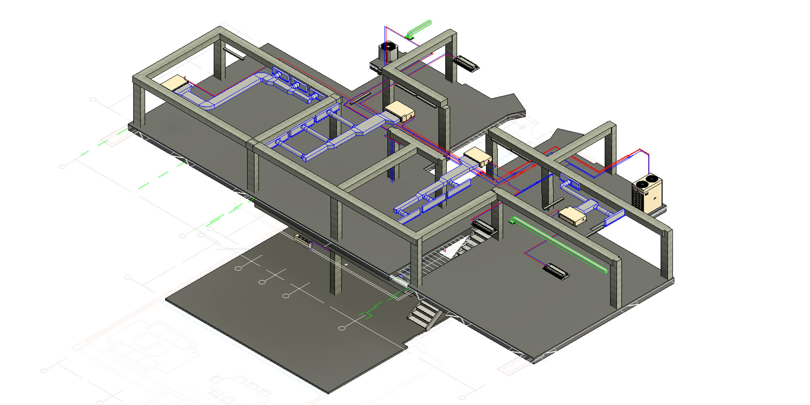
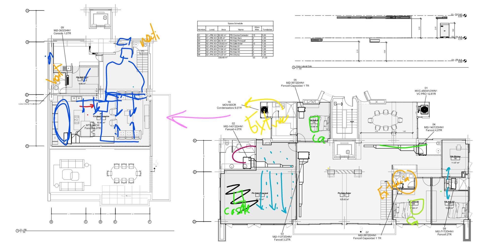
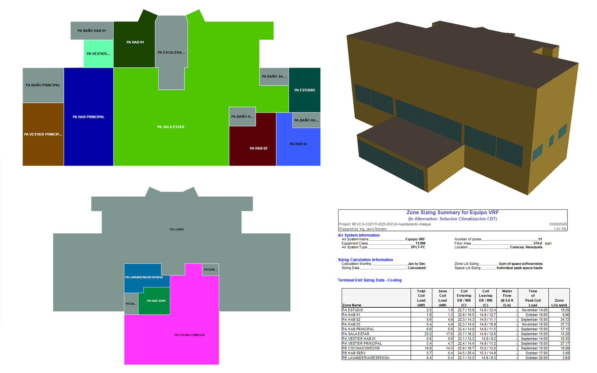
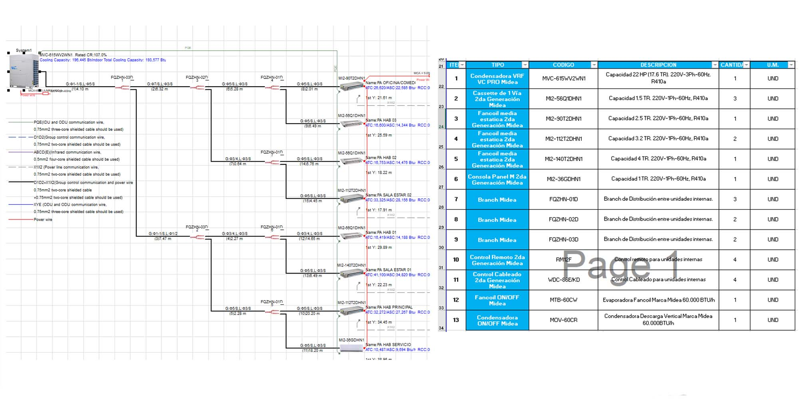
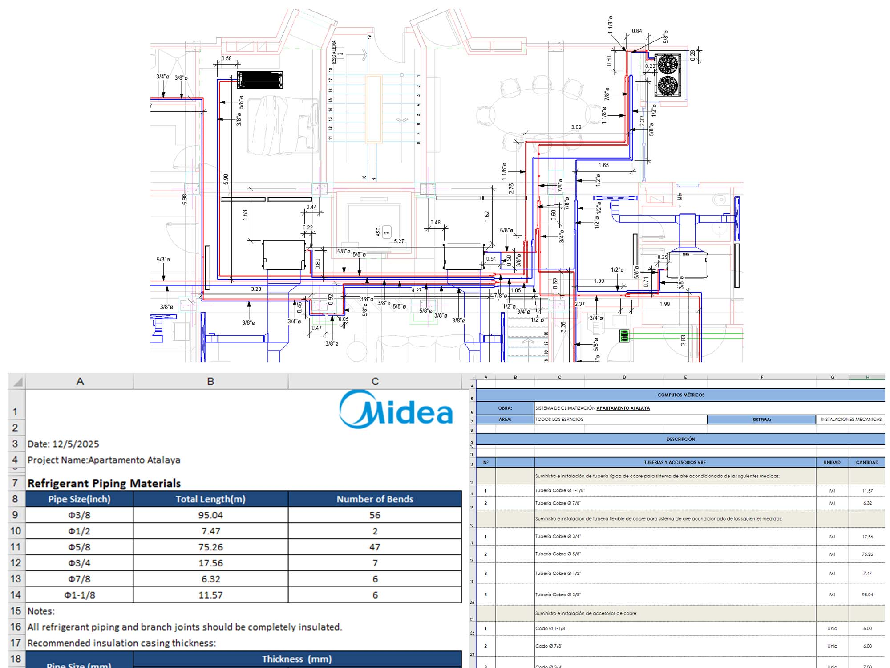
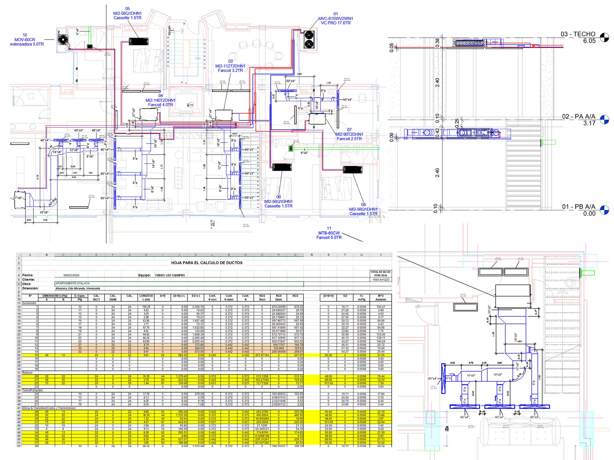
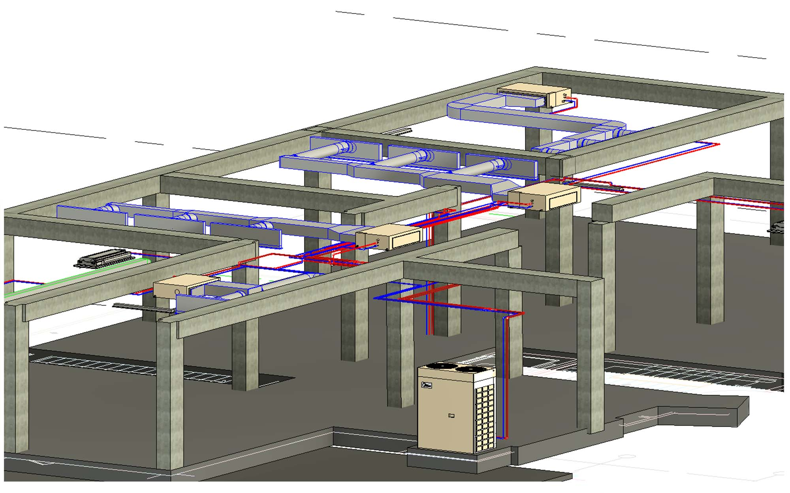
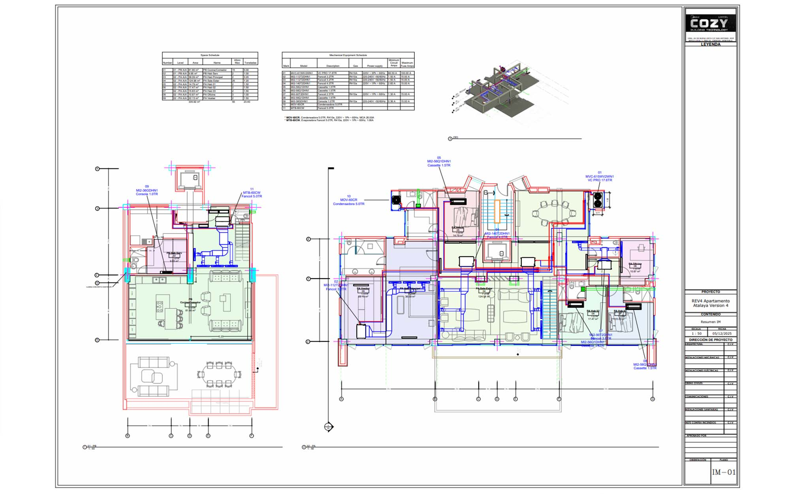

Figura Nº 1. Modelo 3D Básico de las vigas y columnas de la localidad, así como las instalaciones mecánicas propuestas para el Proyecto.
Caso de Estudio CBT-2025-0390 Apartamento Residencial en Caracas
Para el diseño y ejecución de cualquier proyecto de climatización para el sector residencial es crucial mantener un equilibrio entre el diseño ideal apropiado y las visiones estéticas que los arquitectos, ingenieros civiles y/o clientes finales tengan para los espacios a climatizar. Esta labor se ve especialmente complicada al tratar con “Apartamentos Lujosos de Alto Target” como si se tratará de una razón valida para justificar cualquier decisión que priorice los aspectos estéticos sobre los técnicos. Aun así, con el fin de mejorar mediante el análisis retrospectivo, a continuación, les presento todo el flujo de trabajo empleado, así como posibles puntos de mejora que pudieron haber sido aplicados durante la etapa de diseño del proyecto que denotaremos bajo el código “CBT-2025-0390”.
Recepción de Información y Límites de Diseño
Una vez asignado el proyecto y recibir toda la información recopilada por el Ingeniero de Ventas encargado de la negociación, se comenzaron todas las estimaciones iniciales para generar un dimensionamiento preliminar de los equipos que podrían ser requeridos para la correcta climatización de los espacios, esto se realizó con el fin de tener una mejor visión de las ventajas y desventajas de las ideas que se puedan presentar durante una reunión en sitio con el cliente.
En dicha reunión el cliente expresó que el apartamento contaría con cielo raso ubicado a 10cm por debajo de las vigas de Planta Baja y 5cm por debajo de las vigas de Planta Alta, dejando así una altura de 42cm (16.5”) y 38cm (15”) respectivamente para la instalación de las unidades interiores, tuberías de cobre y ductos para la distribución de aire. Adicionalmente se condicionó el diseño a que se debían emplear Rejillas Lineales para el suministro de aire ubicadas paralelo a las vigas de la habitación principal, sala de estar y comedor.
Claro, la primera preocupación al escuchar estas instrucciones fue la correcta distribución de aire principalmente para las habitaciones y el comedor de Planta Alta, que debido a la disposición de las vigas no se contaría con la posibilidad de pasar tramos de ductos por debajo de las mismas. Por tal motivo se aprobó la recomendación de emplear unidades interiores tipo Cassette de 1-Vía para la climatización de las habitaciones, a excepción de la Habitación Principal, la Cocina, los Comedores y las Salas de Estar que debían ser climatizada por unidades tipo Fancoil.

Figura Nº 2. Anotaciones realizadas sobre la ubicación preliminar de los equipos durante la reunión con el cliente en sitio.
Fase de Diseño y Selección de Equipos
Una vez conocidas todas las inquietudes y requerimientos del cliente, comenzó la fase de diseño, se obtuvieron por parte del cliente planos DWG actualizados y se comenzó con el Estudio de las Cargas Térmicas de los espacios aplicando las consideraciones de diseño contempladas en los Estándares ASHRAE 62.1 y 90.1. Se realizó un Modelo Energético a partir de las Arquitectura de la edificación, se definieron cada uno de los Espacios y sus Características y se realizó la Zonificación requerida, obteniendo que para la correcta climatización de todos los espacios se requieren 20.39TR (71.7kW) a carga pico y 22°C (TBS) de Punto de Operación.

Figura Nº 3. Modelo Energético en 3D y Zonificación de los Espacios de la Edificación, así como resultados obtenidos por Zona (Software Empleado: Carrier HAP v6.2).
Ya con los requerimientos de climatización por espacio definidos, comienza el proceso de selección de equipos, para este caso especifico el Ingeniero de Ventas encargado ya había concretado la venta de un Equipo Fancoil de Expansión Directa de 5TR (60kBTU/h) para la Sala de Estar y la Cocina de Planta Baja (aunque para dicho espacio se requería realmente una capacidad de 5.66TR para carga pico), por lo cual solo quedaba la selección del resto de los espacios de planta alta y habitación de servicio, que debido al poco espacio disponible para la ubicación de las condensadoras debía tratarse de una solución con Sistema VRF. Estos equipos VRF se seleccionaron en base a la disponibilidad en inventario cuidando en todo momento que los tamaños de los equipos sean adecuados para la aplicación.
Conociendo que se tienen los equipos requeridos disponibles en inventario se procede con la verificación del sistema con el software del fabricante, en este caso empleando el Software MSSP de Midea, obteniendo así que se requiere una Unidad Exterior MVC-615W2WN1 de una capacidad nominal de 17.6TR (siendo esta aquella de mayor capacidad cuyas dimensiones se ajustan al espacio disponible en obra). La lista completa de unidades interiores requeridas se puede consultar en la Figura N°4. Es importante mencionar en este punto que el software del fabricante señala que la combinación de las unidades interiores con la unidad exterior resulta con una Tasa de Combinación (Combination Ratio – CR) de 107%, esto nos indica que si todas las unidades interiores trabajaran a la vez existirá un 7% en términos de potencia de climatización que no podrá ser suministrados de forma efectiva. Lógicamente esta selección de Tasa de Combinación está pensada para que los equipos de las habitaciones no estén encendidos a su máxima capacidad durante el día y en cambio se empleen las áreas comunes.

Figura Nº 4. Reporte VRF indicando el Diagrama de Conexionado entre Unidades Internas y Externa y Lista de Equipos Cotizados.
Ingeniería de Detalle y Generación de Cómputos Métricos
Dado a que se contaba con todo el tiempo suficiente para realizar el trazado tanto de la Tubería de Liquido como de la Tubería de Gas, se procedió a realiza el recorrido considerando todos los pases de viga necesarios del Sistema VRF y del Equipo Expansión directa. Todos los metros lineales de tuberías se contabilizaron haciendo uso de los “Schedules” integrados en Revit facilitando enormemente la introducción de los metros lineales de tuberías entre elementos de derivación (“Branches”) en el Software MSSP. Por comodidad se hace uso de la misma lista de materiales que genera el Software VRF para la generación de los cómputos métricos de tuberías de cobre.

Figura Nº 5. Acotado de los Recorridos de Tuberías de Cobre en los Planos de Detalle y Generación de Cómputos Métricos de Tuberías empleando el Software VRF Midea MSSP.
Posteriormente comienza el proceso de modelado del Sistema de Distribución de Aire de los Equipos Fancoil, haciendo uso del Caudal a Máxima Velocidad indicado por el fabricante y se calculó empleando el metodo tradicional de calculo de ductería por Igual Fricción empleando una Perdida de Carga estandar de 0,15 pulgadas de columna de agua por cada 100pies lineales de ductos, apoyando los calculos con el software DesignTools DuctSizer en su versión 6.4 de la empresa McQuay AirConditioning. Por otro lado, las rejillas de suministro y retorno se seleccionaron empleando como referencia el catalogo general de Rejillas Nacionales de la empresa Aerometal. Ahora bien, debido al poco espacio sobre el cielo raso y para garantizar el adecuado suministro de aire a lo largo de todo e Difusor Lineal, se hace el uso de Plenums de suministros para cada Difusor. Luego de haber realizado el completo modelado, se hace uso de una Hoja de Cálculo para donde se indica el Ancho, el Alto y la Longitud Equivalente de cada tramo de ducto para obtener los Metros Cuadrados en Laminas de P3 requeridos para la completa instalación de los ductos.

Figura Nº 6. Detalle del Modelado de Ductos de Suministro con sus Respectivos Difusores de Suministro y Rejillas de Retorno. Se presenta además una Captura de la Hoja de Cálculo empleada para estimar la cantidad de P3 requerida para el Sistema de Distribución de Aire y Extracción de Baños.
Etapa de Revisiones
En toda obra existen retrabajos por múltiples factores, ya sea cambios de arquitectura, cambios de presupuesto, cambios de enfoques, falta de comunicación efectiva con el cliente, interferencias con otras instalaciones (sanitarias, contra incendios, eléctricas, etc.) y este proyecto no fue la excepción, menos aún cuando la comunicación con el cliente se realiza por medio de Ingeniero de Ventas. A todos estos cambios y retrabajos se denotan “Revisiones”, y para no extenderse en exceso en este punto a continuación se presenta una lista de todas las revisiones realizadas resumiendo el alcance de cada una:
- REVISIÓN 1 (14/10/2025): Generación de Propuesta comparando los Presupuestos entre una Opción con Fancoil y Cassettes 1-Vía para las Habitaciones Secundarias. Adicionalmente, y por solicitud del cliente, se modifica la Unidad Externa de una Capacidad Nominal de 22HP a 16HP para disminuir los costos, sin embargo, esto generaría una Tasa de Combinación de 127.11% lo cual puede perjudicar la efectiva climatización de los espacios cuando todas las Unidades Internas se encuentren encendidas en simultaneo. Se envía Opciones de Cotización de Equipos, Plano con Ubicación Propuesta de Equipos y Reporte VRF con Distancias Genéricas
- REVISIÓN 2 (17/10/2025): Luego de realizar una Reunión en sitio y discutir diversas limitaciones estéticas impuestas por el cliente, se logra concretar el uso de la Unidad Exterior VCPRO MVC-615WV2WN1 de 22HP (17.6TR) y Evaporadoras tipo Cassette 1-Vía para las habitaciones principales. Se genera nuevo Reporte VRF con Distancias Genéricas, Plano con Ubicación Propuesta de Equipos y Cotización de Equipos.
- REVISIÓN 3 (31/10/2025): Motivado por Cambios en Obra, se cambia la ubicación del Bajante de Tuberías de cobre que se dirigían a la Unidad Interna que climatiza la Habitación de Servicio por lo cual se modelan los cambios solicitados y se generan nuevos Cómputos Métricos para la instalación de los Equipos.
- REVISIÓN 4 (05/12/2025): Por lineamiento del cliente, se modifica la ubicación del Fancoil que climatiza la Habitación Principal, cambiándolo del Baño al Vestier. Adicionalmente, se agrega la condición de únicamente hacer el pase de ductos, del Vestier a la habitación, por la única superficie que no cuente con un Mueble especial a la medida que llegará a la Viga en vez del cielo raso. Se modelan los cambios de en el Sistema de Distribución de Aire para los nuevos planos de las Instalaciones Mecánicas y Cómputos Métricos actualizados.
- REVISIÓN 5: (11/03/2026): Debido a una Falla de Comunicación entre el Cliente y el Ingeniero de Ventas se solicitó que todos los Difusores Lineales se encontraran unidos con un único Plenum de Suministro, sin embargo dado a que dicha solicitud sale de las recomendaciones del fabricante de los Difusores y con el fin de garantizar el correcto suministro de aire se llegó al acuerdo de aproximar lo máximo posible los Difusores y que los mismos no posean los marcos laterales para permitir la unión visual de los Difusores Lineales. Se generan Planos detallando la Instalación de los Plenum de Suministro para los Difusores y haciendo referencia a al catalogo del fabricante donde se indica el tipo de conexión.
- REVISIÓN 6 (12/03/2026): Se solicitó por parte del cliente que las Rejillas de Retorno para el Equipo Expansión Directa de Planta Baja fueran modificadas debido a que las mismas no se alineaban con la visión estética del proyecto, ante esta solicitud se llevó a cabo una reunión se acordó el cambio de ubicación a una zona que permitiera el funcionamiento estimado y que las mismas fueran del mismo color que el cielo raso para disminuir el “impacto visual” de las rejillas de retorno.

Figura Nº 7. Captura del Modelo 3D donde se muestra la Unidad Exterior VRF, las Unidades Internas, el Sistema de Ductos y el Recorrido de las Tuberías de Cobre.
Conclusiones y Puntos de Mejora
Existen múltiples puntos de mejora, empezando por la Comunicación con el Cliente que debería ser directa es muy cierto, sin embargo, con ese punto en especifico es más complicado pues se trata de un pseudo-lineamiento corporativo instaurado en la organización que no es más que un mero reflejo de la alta competitividad entre los mismos vendedores y la desconfianza entre sus iguales. Pero dejando de lado aquellos aspectos más relacionados a las relaciones personales y enfocándonos principalmente en los aspectos técnicos es importante destacar que las REVISIONES 5 y 6 pudieron evitarse al asumir que el cliente siempre va a preferir un solo difusor de suministro, aunque internamente se encuentre separado por sus Plenum de Suministro.
Otro punto de gran impacto para la validación de las decisiones técnicas frente al cliente podría ser el uso de simulaciones computacionales altamente graficas que puedan ser mostradas en reuniones con el cliente para apoyar cada decisión, principalmente en ubicaciones de rejillas de suministro y retorno así como de los equipos y de las dimensiones de cada tramo de ducto para disminuir los debates frente a solicitudes estéticas que llevan al límite la ingeniería.

Figura Nº 8. Plano Resumen Final entregado al Cliente y al Departamento de Instalaciones para la Construcción y Puesta en Marcha del Sistema (Los Planos entregables tambien debe ser mejorados, de eso no hay duda).